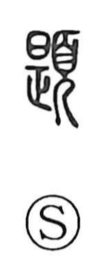

題

Kun: hitai, shirusu | On: dai, tei
title ・ inscription ・ to write down
Explanation
題 joins 頁, a person bowing while wearing ritual headgear, with the sound element 是. 頁 supplies the head and face. 是 originally pictures a spoon: its broad upper bowl provides a comparison for the forehead, the prominent front of the head. 題 first names this part of the face.
The forehead’s position at the front and centre extends to a plaque displayed in the corresponding place in a room. An inscription on such a plaque identifies or announces something. From the displayed inscription, 題 comes to mean a heading or title, then the subject announced by a heading. A topic for discussion, an assigned question, and a problem to be answered all grow from this use.